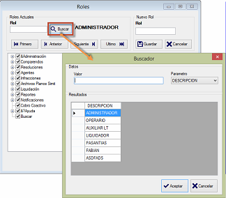

Se puede buscar un perfil existente dando clic en el botón de Buscar y habilitar o des
habilitar para cualquier perfil las opciones a las que éste tiene acceso dentro de la
aplicación. También puede utilizar los botones de desplazamiento izquierda/derecha
para ir a cualquier perfil. En la parte inferior del formulario aparece el listado de
opciones generales de la aplicación. Chequee aquellos que serán habilitados para el
perfil escogido y luego de clic en el botón Guardar Permisospara establecer los cambios.

Buscador de Perfiles.
Puede agregar un nuevo perfil dando clic en el botón Guardar. Adicione un nuevo perfil
colocando un nombre de perfil en la caja de texto Nuevo Rol y luego de clic en el botón Guardar para confirmar la acción.